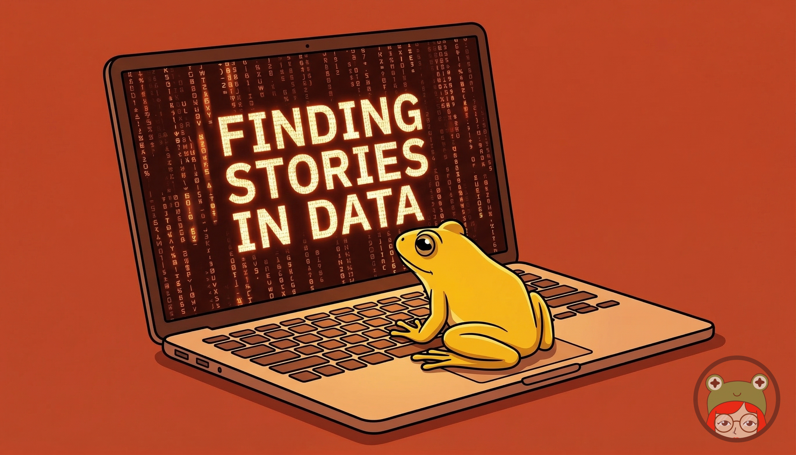

🪷 The Pond #9: Embeddings, eggs and statistics
Also: come learn about maps!
by Ada Homolova · May 6, 2026

Hello my dear frosches! 🐸
This month we had two fantastic sessions at The Pond, and we even succeeded in capturing the footage of both of them! Proof: links to the YouTube videos attached. We also pondered bias in language models and how it can subtly influence your analysis. Plus selected reading for inspiration.
Read all about it below.
Happening at The Pond
Next month we will again offer two training sessions:
🗺️ Landscapes of data: a deep dive into maps is our next live session. Jonathan and I will look at what works and what to watch out for when you put your data on a map, including a stop at QGIS, the best free mapping tool, with its famously steep learning curve. Wed 20 May at 14:30 CET (direct meeting link)
☕ Community hangouts: Need help, want to bounce an idea around, or just miss coffee-machine chats? Drop in for 45 minutes. No agenda, come and go as you like.
Made at The Pond
👀 Pondcast #4: Finding stories in health expenses data is up. A practical data exploration done almost entirely with Claude Code while I think out loud about why I do what I do. Beginner-friendly and a peek into how I work with a fresh dataset.
🧠 The bias hiding in your AI is our newest blog post. A reminder to read the words from your model as critically as you read the numbers.
🟠 Pondcast #5: Text embeddings and how to use them is also up! Monneyboi and I walk through how we built trends.datafrosch.fun, pulling Google trends from 120 countries, embedding them in 3D space, and clustering similar searches and news together. Useful if you're sitting on a pile of documents and don't know where to start.
What We're Reading
📊 The limits of our personal experience and the value of statistics is a beautiful reminder from Our World in Data that the world is too huge for any one of us to understand by anecdote.
🥚 25 years of eggs: John Rush scanned every receipt since 2001 and let two AI coding agents loose on 11,345 of them to track egg prices over 25 years. A great lesson in OCR, AI agents and the patience of long-term data hoarding.
👁️ Understanding UMAP is the visual explainer on dimensionality reduction. It's the technique we use under the hood at trends.datafrosch.fun.
🤖 Can I use Skills with Posit Assistant for the RStudio IDE? Spoiler: yes. A short, practical post for the R folks who want to plug Skills into their existing workflow without leaving RStudio.
📰 The Content Management System is dead. Long live the Context Management System argues that generative AI is unraveling the finished-article model and what replaces it with built on context: raw reporting, flagged analysis, journalism as the verification layer.
Are you enjoying this newsletter? Join The Pond on Discord and let me know!
With 💚 and 🐸,
Ada